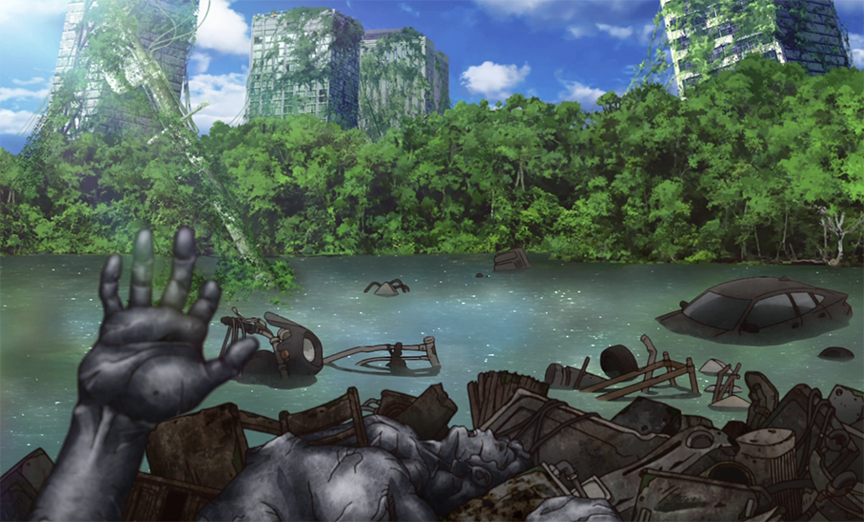

Which Anime Is Better? Dr. Stone vs Demon Slayer.
Why Dr. Stone is better than Demon Slayer

The Plot
- In the present time, a mysterious green light hits Earth and turns all humans to stone.
- 3,719 years later, a 16-year-old science prodigy named Senku is suddenly revived, finding himself in a world where all traces of human civilization are gone.
- Senku begins to try to find a cure for petrifaction and use science to rebuild civilization, bring back every living person on Earth, and discover how all of humanity became stone 3,000 years ago.
- Slowly bring back friends, and unfortunately, those against the idea of the old ways.
- We see Senku overcome trials through science as we get a step closer to bringing everyone and everything back.
The Science
- Not only does Dr. Stone have some action pack scenes, but its also a very comedic show that teaches real science to people.
- FUN FACT! They use real science based on facts in their show to bring the idea of someone starting from scratch to then creating cutting-edge science to life.
- I find myself always learning something new every episode.
WHY DR STONE IS THE BEST!
- Dr. Stone is a show I can watch anytime. It has its intense moments, but its mainly a feel-good comedy show.
- It always brings a smile to my face.
- I never stress when watching due to suspense; I can relax and even do homework when watching episodes.
- This is a show I can rewatch over and over and never get tired of it.
- Its my feel-good show.